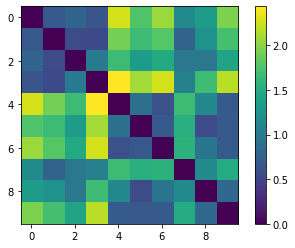
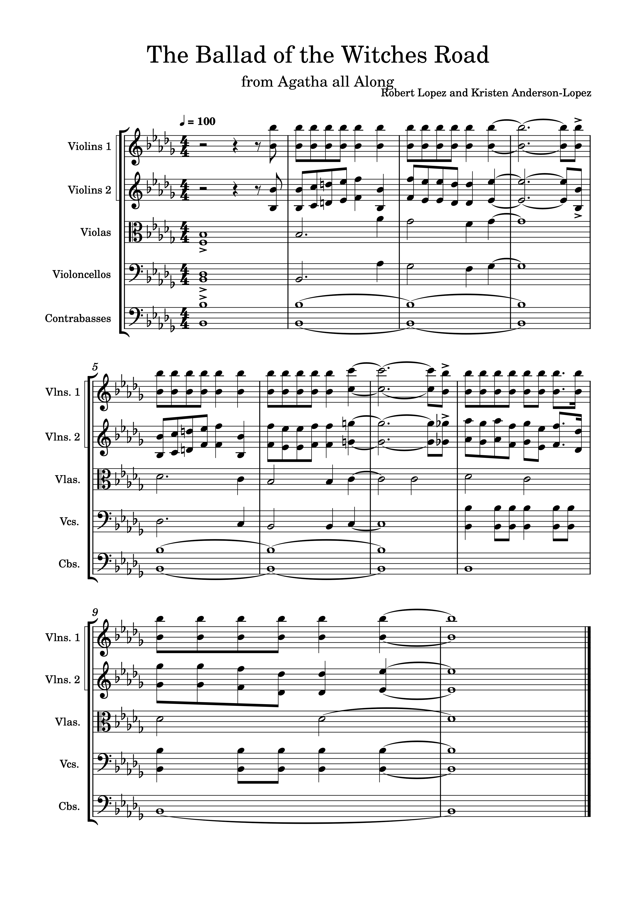
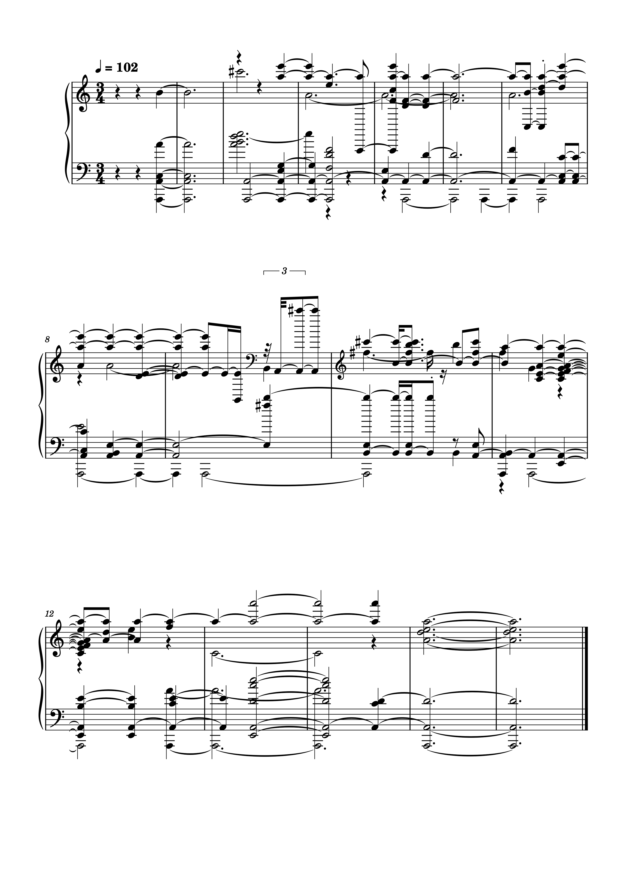

Task 1: Similarity
Using jupyter notebook, I have created a similarity graph based off of a range of provided tracks and the three tracks that relate to my theme.
My tracks are 7, 8 and 9. Tracks 8 and 9 were created by the same person, we can see in this similarity graph that both of those tracks are quite similar.
Track 7 is quite different from both 8 and 9. From this graph we can see that 7 is more similar to track 8 than 9.

Task 2: Transcription
Original Score:
Polyphonic Score:
Analysis:
When comparing the transcriptions, we can see that the time signature has been changed on the polyphonic transcription from 4/4 to 3/4. It has also lost all of the information about what instruments are playing, the polyphonic transcription is for piano but the original score contains a multitude of string instruments. Because the transcription has attempted to combine all of the instruments into one score, there are a large amount of ledger lines above and below the stave, making the polyphonic transcription very messy. The tempo has also been changed, although only slightly from 100 to 102.When listening to the original vs the polyphonic transcription, they are quite different. It has made a lot of the notes longer, while keeping a similar pitch to the original piece. Bars 1-6 are most like the original piece, the song becomes quite distorted after bar 6 and harder to identify as the same song.